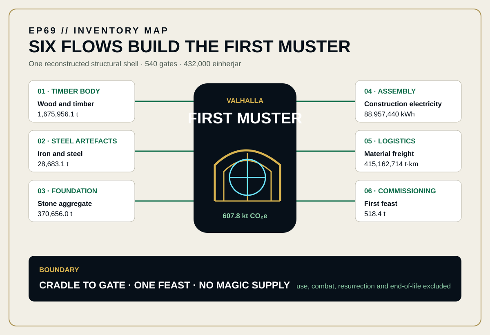
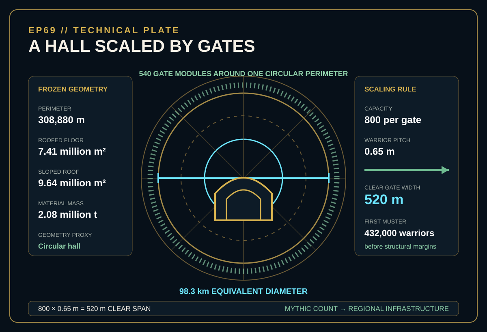
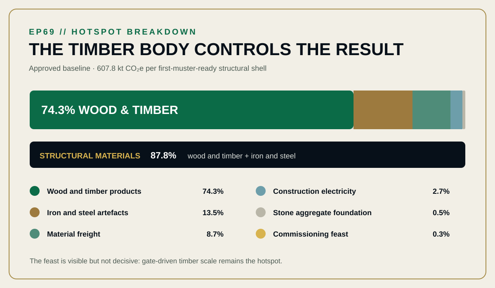

EPISODE #69 · MYTHS & LEGENDS
Valhalla
What is the physical bill for Valhalla’s first muster?
Narrative engineering reconstruction — not a verified LCA or comparative assertion.
THE SUBJECT
An eternal hall. A finite construction bill.
The approved episode fixes a finite reporting slice around Valhalla: one circular timber hall shell with 540 gates, a shield roof, spear wall and mail-covered benches, built and ready for the first muster of Odin’s chosen warriors. Opening-day construction, material freight and one commissioning feast are included; eternal operation is not.
Each gate must let 800 armed warriors pass abreast. At the declared 0.65 m warrior pitch, one gate requires a 520 m clear span before structural margins. A circular perimeter hall is used to avoid inventing a palace plan. This is an explicit geometry proxy, not an archaeological claim.
540 gates × 800 warriors
The first muster fixes a capacity of 432,000 einherjar.
98.3 km equivalent diameter
The circular proxy produces a 308,880 m perimeter and 7.41 million m² floor area.
74.3% wood hotspot
Wood and timber products dominate the approved baseline footprint.
Cradle to gate · one feast
Use, combat, resurrection, magic supply, land in Asgard and end-of-life are excluded.
VISUAL MODEL
The gate count becomes regional infrastructure
The inventory map keeps six physical flows inside one first-muster boundary. The technical plate freezes the geometry that converts a mythic capacity statement into floor, roof and material quantities.


DETAILED LIFE CYCLE INVENTORY
Six flows build the first muster
Activity data, factors and contribution shares follow the approved episode. The climate-change column uses the approved contribution percentages; the total remains the approved 607,755.3 t CO₂e before headline rounding.
| Stage | Component / activity | Activity data | Climate change | Modelling basis |
|---|---|---|---|---|
| Construction | Wood and timber products | 1,675,956.1 t | 74.3% of baseline | EF01 · 269.504 kg CO₂e/t. DEFRA 2026 Material use; timber shell, roof, spear shafts and shields. |
| Construction | Iron and steel artefacts | 28,683.1 t | 13.5% of baseline | EF02 · 2,861.583 kg CO₂e/t. DEFRA 2026 steel-cans proxy; mail, spear tips, shield fittings and structural fittings. |
| Foundation | Stone aggregate foundation | 370,656.0 t | 0.5% of baseline | EF03 · 7.803 kg CO₂e/t. DEFRA 2026 Material use; perimeter foundation. |
| Commissioning | First feast | 518.4 t | 0.3% of baseline | EF04 · 3,701.404 kg CO₂e/t. DEFRA 2026 food-and-drink material-use proxy; one opening-day allocation. |
| Assembly | Construction electricity | 88,957,440 kWh | 2.7% of baseline | EF05–08 · 0.18436 kg CO₂e/kWh. UK generation, T&D losses, WTT generation and WTT T&D combined. |
| Logistics | Material freight | 415,162,714 t·km | 8.7% of baseline | EF09–10 · 0.12715 kg CO₂e/t·km. Average non-refrigerated HGV plus WTT; all physical materials × 200 km. |
| Approved baseline total | 607,755.3 t CO₂e | 607.8 kt CO₂e at headline precision, per first-muster-ready structural shell. | ||
Included
Timber shell, steel artefacts, stone base, construction power, material freight and one commissioning feast.
Excluded
Combat cycle, resurrection, use phase, land in Asgard, end-of-life and magic supply.
Cut-off event
The model stops at a physically built, first-muster-ready hall. Recurrent divine food and daily battle remain outside the boundary.
Proxy disclosure
Mythic spear walls, shield roofs and chainmail benches are decomposed into wood, formed steel, aggregate, electricity and freight flows.
HOTSPOT
The timber body controls the result
Wood and timber products contribute 74.3% of the approved baseline. The mythic gate count drives that hotspot because gate width expands the whole roofed perimeter.

Main result
607.8 kt CO₂e
One first-muster-ready reconstructed structural shell.
Wood and timber
74.3%
The dominant structural hotspot.
Iron and steel
13.5%
The second-largest material contribution.
Material freight
8.7%
415 million t·km at the declared 200 km delivery distance.
First feast
0.3%
One opening-day allocation; eternal dining is outside the model.
SENSITIVITY · WARRIOR PITCH
Geometry moves the result by ±14.9%
0.55 m pitch: 517.2 kt CO₂e (−14.9%).
0.65 m baseline: 607.8 kt CO₂e.
0.75 m pitch: 698.3 kt CO₂e (+14.9%).
One-person gate pitch scales the perimeter, floor, roof, timber and freight together.
SENSITIVITY · STEEL PROXY
Proxy choice matters, but remains secondary
Closed-loop steel: 1,822 kg CO₂e/t → 577.9 kt CO₂e (−4.9%).
Formed-steel baseline: 2,862 kg CO₂e/t → 607.8 kt CO₂e.
Generic metals: 3,822 kg CO₂e/t → 635.3 kt CO₂e (+4.5%).
Even the high-metal case does not move the hotspot away from timber scale.
INTERPRETATION
The gate count is the real design brief
Five hundred and forty doors sized for 800 warriors each create a 309 km perimeter before materials are counted. The feast is only 0.3% of the result. Physical scale drives the baseline more strongly than the steel proxy, while eternal dining remains outside this finite construction model.
THE VERDICT
“Valhalla is less a hall than a logistics problem with a roof.”